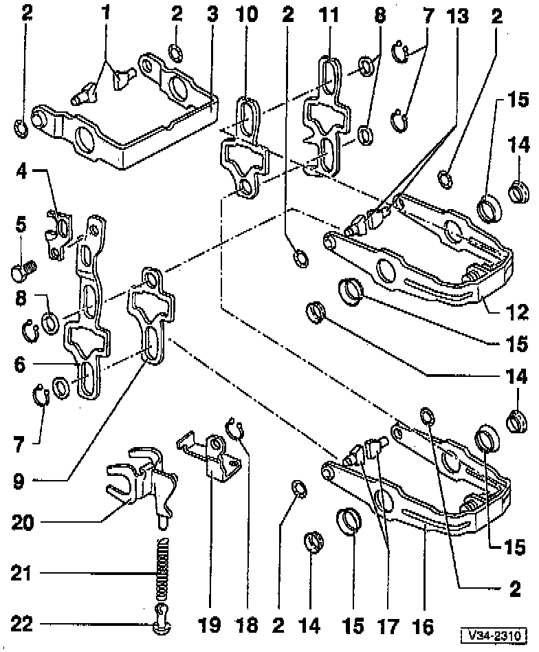
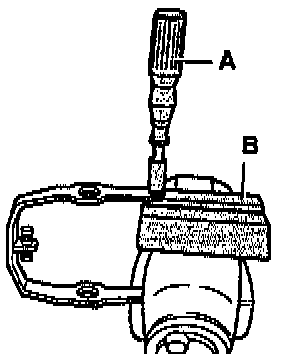
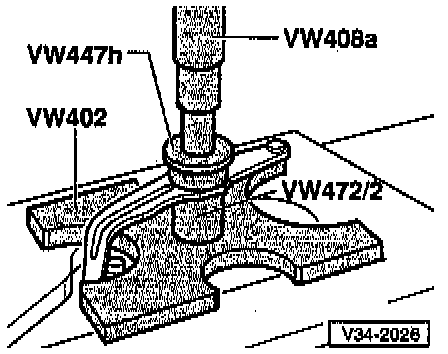
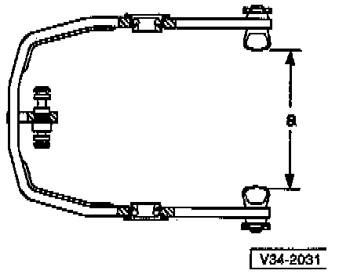

Input Shaft

COMPONENT NOTES AND INFORMATION
1 Shift segment
- Identifying, refer to Fig. 1, below.
- Must still rotate freely after installing circlip
2 Circlip
- Always replace
- Pry off with screwdriver
- Installing, refer to Fig. 2, below.
3 5th gear shift fork
- Adjusting, refer to Disassembly/Assembly Procedure. Service and Repair
4 5th gear selector jaw
5 Bolt
- Tighten to: 25 Nm (18 ft lb)
6 5th gear selector plate
7 Circlip
8 Washer
9 3rd gear (3GR)/4th gear (4GR) selector plate
10 1st/2nd gear selector plate
11 Reverse gear selector plate
12 3rd (3GR)/4th gear (4GR) shift fork
- With shift segments, refer to Fig. 5, below.
13 Shift segment
- Identifying, refer to Fig. 1, below.
- Must still rotate freely after installing circlip
14 Bearing
15 Bearing inner race
- Removing, refer to Fig. 3, below.
- Installing, refer to Fig. 4, below.
16 1st/2nd gear shift fork
- With shift segments, refer to Fig. 5, below.
17 Shift segment
- Identifying, refer to Fig. 1, below.
- Must still rotate freely after installing circlip
18 Circlip
19 Support
- For reverse gear shift fork
20 Reverse gear shift fork
21 Spring
22 Sliding piece
- Domed-type
PROCEDURES

Fig. 1 Identifying shift segments
- Dimension -a-
1 - 1st and 2nd gear shift segments Dimension -a- = 12.1 mm (0.476 inch)
2 - 3rd gear and 4th gear shift segments Dimension -a- = 7.7 mm (0.303 inch)
3 - 5th gear shift segments Dimension -a- = 12.1 mm (0.476 inch)

Fig. 2 Installing circlip
- Press new circlip into shift segment groove with socket.
A - 10 mm socket with handle
B - Protective jaws for vise
NOTE: The shift segments must still rotate freely after installing the circlip.

Fig. 3 Removing bearing inner race
CAUTION: Be careful not to bend shift forks when removing and installing inner race.

Fig. 4 Installing bearing inner race
- Press in up to stop.

Fig. 5 Shift fork with installed shift segments
- Application:
1st/2nd gear shift fork
Dimension -a-: 87.2-87.9 mm (3.43-3.46 inch)
- Application:
3rd gear (3GR)/4th gear (4GR) shift fork
Dimension -a-: 96.0-96.7 mm (3.78-3.81 inch)
- Shift segment applications, refer to Fig. 1,01m above.